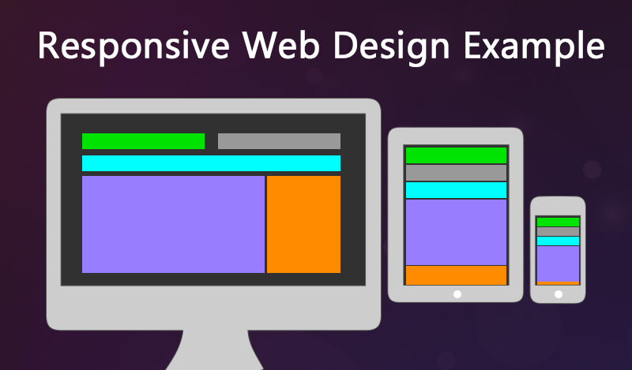
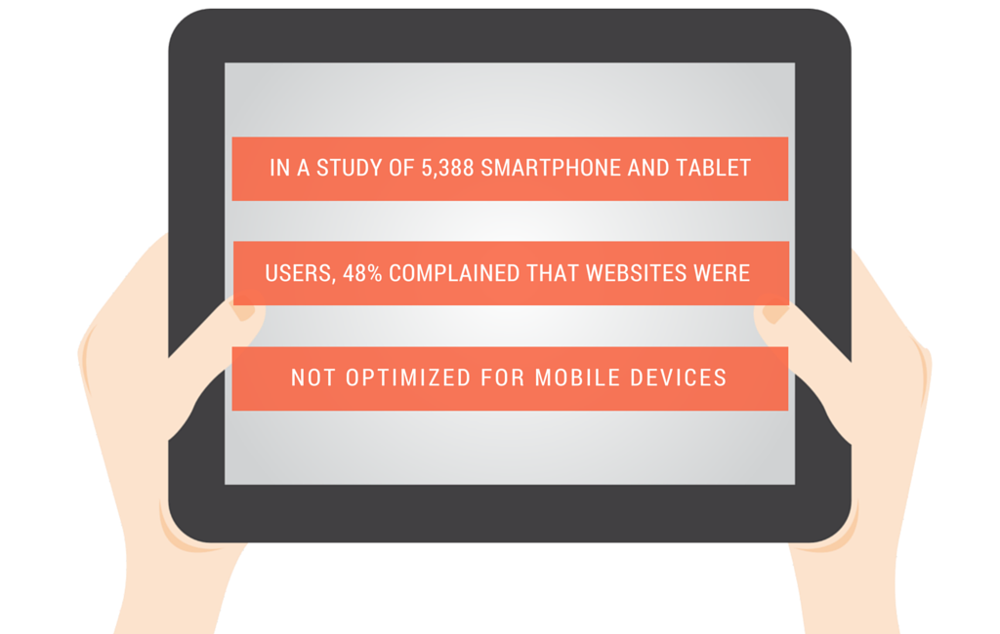
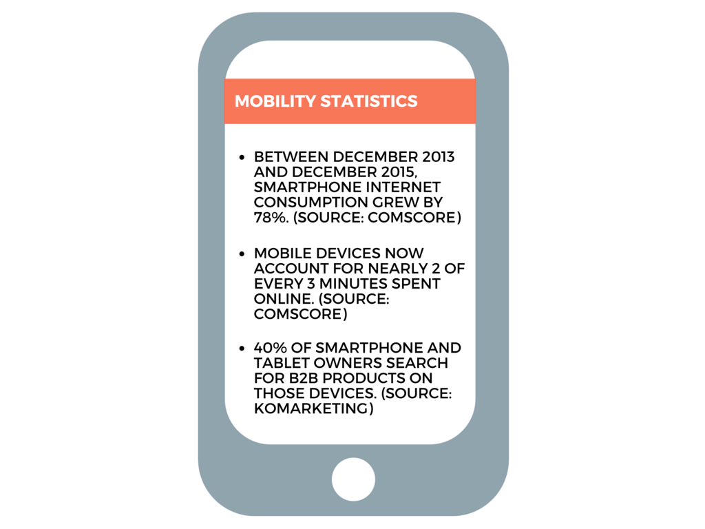
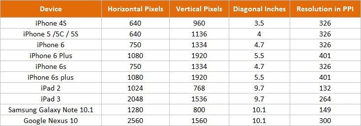
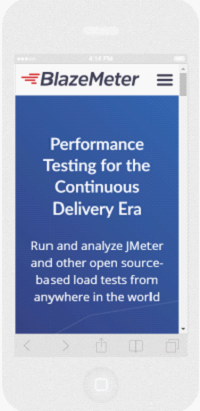

A responsive web design involves creating a flexible web page that is accessible from any device, starting from a mobile phone to a tablet. Furthermore, a responsive web design improves users’ browsing experience. Considering this from a quality assurance perspective, a responsive web design requires thorough evaluation using a variety of devices before it is ready to go live. Software testers may find it challenging to perform responsive design testing as a variety of factors are to be looked into during the testing phase.
Here’s a quick overview on responsive design testing from a quality assurance perspective. In this post, we would be focusing broadly on the following topics:
- The challenges involved in testing a responsive website
- How website testing differs from a mobile device to a computer
- Rules and guidelines to be followed during responsive design testing and/li>
- Lastly, various tools available to perform responsive testing
Useful Guidelines to Improve Responsive Design Testing
What is a Responsive Web Design? How is it useful in current IT industry?
It is a known fact that more and more users are replacing their desktops and laptops with either tablets or other mobile devices, which brings the responsive web design topic to the forefront.
Let’s begin by talking a bit about responsive web design. Responsive web design is a trending topic in the current web development scenario. Many web designers, developers and testers today focus on developing websites and applications that can be easily accessed on diverse mobile devices. A responsive web design not only enhances an end-user’s overall web experience, but makes it effortless to view a website on a mobile device.
Recently, Google has released a tool, which allows developers to view the appearance of a website on different devices using various screen resolutions.
Responsive Design Testing Challenges
With the 24 x 7 availability of Wi-Fi zones and unlimited internet access, consumers are demanding access to anything and everything right at their fingertips. This trend is compelling enterprises to revamp/migrate their existing websites to responsive versions, in order to make it easy for their consumers to access content on the go. However, while designing a responsive website or apps, there are certain parameters that developers need to consider, right from creating websites/apps which are user friendly to laying more emphasis on finer aspects such as resizing, panning and scrolling. Here’s another interesting blog on creating an effective UI design.
From a quality assurance perspective, software testers must be aware of the various aspects of a responsive web design, including its advantages and limitations. Furthermore, they should be in a position to clearly identify the requirements and features a consumer expects from a responsive website. While pursuing performing testing, it is imperative for testers to create an exhaustive checklist and craft a strategy to carry out a step-by-step testing process.
Responsive Design Testing Checklist
Here’s a checklist that would help software testers to perform effective responsive design testing:
a) Development Compatibility
It is the responsibility of the software testing team to ensure that all features and options available to a user accessing a website via a desktop or a laptop are also extended to the mobile version of the website. Every effort should be made to ensure that flexibility is not compromised. All screens should flawlessly align depending on the resolution and dimensions of the mobile device.
b) Design Compatibility
In the current mobility market segment, multiple mobile device manufacturers are offering a variety of devices. While it may not be possible to perform responsive design testing on all available devices, a broad combination of devices should still be considered during the testing phase. Further, software testers should ensure that images or elements do not overlap. If the testing team is working on a client project, they can obtain additional inputs from their client about the devices their consumers predominantly use, which would help them in creating an effective test plan. Generally, a responsive website should be tested on devices ranging between 320 pixels to 2560 pixels screen resolution.
Below is a reference table that lists the screen resolutions of a variety of mobile devices.
c) Multiple Modes
Basically, all mobile devices have two modes – landscape and portrait. A website is viewed in either of these modes. In a portrait mode, a device with its shortest edge is facing the user, while in a landscape mode, a device with its longest edge is facing the user. A website’s look and feel should appear similar in both these modes. Designers/Developers should ensure that image/text is auto adjusted depending on the mode chosen by the user.
d) Web Simulation
Unlike desktop computers or laptops, high-speed networks may not be always available to mobile users. In such conditions, load time and performance factors come into the picture. A website’s load time should always be consistent on a mobile device. Additionally, developers should ensure that image size (file size) is minimal, when compared to the images displayed on a desktop version, which helps in reducing the load time. Nearly, all testers believe that this is an important factor to concentrate during testing and ensures performance consistency.
e) Content Orientation
It is essential for a software tester to understand that as they move from a bigger screen layout (desktop) to a restricted layout of a smaller screen (mobile device), the way content is displayed transforms to a great extent.
Let’s quickly find out the variation between a desktop screen and a mobile screen using a real-time scenario. We have chosen the BlazeMeter website to demonstrate the difference between a desktop screen and mobile device screen.
If you take a look at the below screenshot of their responsive website, you will notice that the layout, text and content is presented in a clear and crisp manner by removing all unwanted spaces. It is a great way of presenting content on a mobile device.
Evolution in Mobile App Development
In the current mobile device market segment there are approximately 24,000 individual Android devices available. This key statistic is just an indication of the endless opportunities available for businesses and why they should focus on creating responsive websites and developing mobile apps that can be accessed on mobile devices. Furthermore, several surveys have pointed that end users are showing keen interest to install and access social media platforms, games, and messaging platforms on dedicated mobile apps rather than using a browser to access these. This trend is indirectly helping enterprises advertise their mobile apps and reach the consumers easily.
Rules and Guidelines for Responsive Design Testing
Here are some important rules and guidelines for effective responsive design testing.
- Text Alignment –Ensure that image and text are aligned perfectly
- Clickable Zones –Pay special attention to these zone
- Padding –Check for precise padding across all boundaries
- Fonts –Ensure that font size, style and color are consistently maintained across the website/application
- Scrolling –Ensure that flexible scrolling is offered to end user
- Navigation –Simplify navigation between internal web pages
- Boundaries – Make sure that text, images and frames are within the boundaries
- Analytics –Utilize Google analytics to summarize the devices and browsers used by consumers
- Indexing –Ensure responsive apps are indexed by search engines
- Menus –Navigation menus must be designed for a broad range of devices
Tips for Responsive Design Testing – Chrome and Firefox Browsers
The latest internet browsers allow adjusting window size to popular RWD resolutions.
- In Firefox, use Ctrl + Shift + M command to achieve this function
- Google Chrome has advanced options available under developer tools, which also allows testers to emulate a specific mobile device (Developer Tools > Settings > Show ‘Emulation’ view in console drawer)
Responsive Web Design Tools for Software Testing
Here are a few handy tools for responsive design testing:
- http://responsivedesignchecker.com/
- http://lab.maltewassermann.com/viewport-resizer/
- http://beta.screenqueri.es/
Conclusion
Responsive design testing has its own set of challenges. It requires keen observation and the implementation of multiple test strategies. However, with the introduction of various testing tools and emulators, the responsive design testing process has simplified to a certain extent. Regardless of improvements, developers and testers must constantly interact and exchange ideas during the development and testing phase, allowing them to create and deliver better results in a significantly shorter time period.
Evoke’s QA and Testing Services
Evoke offers world-class QA and software testing services which accelerate and improve software application performance across the enterprise. Our testing services incorporate a blend of modern tools and test automation frameworks that help enterprises improve their software quality and enhance performance of their software applications. Our end-to-end testing services include:
- Test Process Consulting
- Functional Testing
- Test Automation
- Performance Testing
- Security Testing
- Compatibility Testing
- Regression Testing
To know more about Evoke’s customer focused IT services, please connect with us at +1 (937) 660-4925 or write to us at sales@evoketechnologies.com.